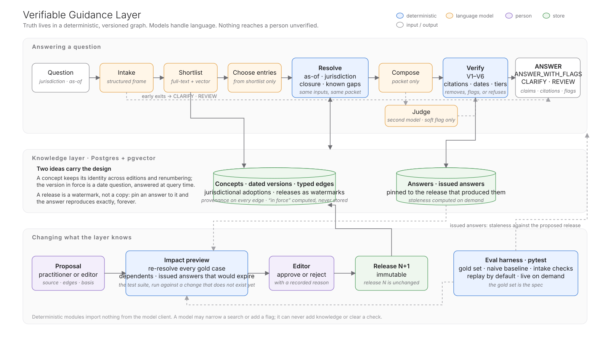

Technical case · for review
A verifiable knowledge layer between a standards body's guidance and the AI systems that answer questions about it. A proof of concept.
A clause can remain word-for-word identical while the correct answer changes, because a definition, exception, or ruling elsewhere has changed — so truth has to live in a versioned graph, not in a prompt, and every answer has to be checked against it before a person sees it.
ericediger.com/vgl/review
The video, this document, the walkthrough and the repository.
ericediger.com/vgl
Nine sections, forty-seven steps of recorded output.
github.com/ericediger/verifiable-guidance-layer
Docker only; no API keys needed for the recorded path.
Eric Ediger · November 2026 · The corpus is entirely fictional — a Global Standards Board shaped like a real standards body, with nothing copied from, or claimed about, any real standard. Every number in this document is a statement about that corpus.
The brief describes an assistant that gives confident answers that are wrong in ways that matter: a clause that has since been amended, a second standard that changes the conclusion, a ruling that carves out an exception.
None of these is a reasoning failure. They are knowledge-structure failures: the model is answering from a flat, unversioned, relationship-blind pile of text, and nothing checks the answer against anything. Better retrieval over the clause's own text cannot see a definition that moved, an adoption that has not happened yet, or a ruling the system never held.
So the design starts from three commitments:
And "the guidance doesn't cover this" is a first-class answer, not a failure.
| ANSWER | Grounded, verified, nothing outstanding. |
| ANSWER with flags | Grounded and verified; a modifier is attached — a carve-out, a pending adoption, an upcoming amendment, a practitioner note. |
| CLARIFY | A control (jurisdiction, as-of date) or a required case fact is missing. Ask the user. |
| REVIEW | No coverage, an unresolved reference in the evidence, or a failed check. Route to a person; name the gap. |
The response carries the claims, each bound to the version IDs it rests on, the flags, the full evidence packet, the verification record and the release — the same JSON for a person's screen and for an agent's tool call. There is no path to an answer that skips verification.
Nine stages to answer a question; one path to change what the layer knows. language modeldeterministic code

Resolve is two SQL statements — a bounded recursive walk and a per-concept in-force selection — and imports nothing from the model client. Verify is six rules in plain code: V1 every claim cites · V2 every citation is in the packet · V3 none is superseded · V4 every carve-out is surfaced · V5 an unresolved reference withholds finality · V6 practitioner material never grounds a claim. A bad supporting claim is removed and flagged; a bad conclusion fails the answer. The judge is a second, different model that can add a soft note and cannot clear a check.
Editions amend and renumber. prov:composite-inclusion-timing is 3.A.4 in Edition 2021 and 3.A.6 in Edition 2025; the number a person sees is a per-version display reference, never an identity. Edges connect concepts, so an edge never needs re-asserting when an edition changes.
A version carries only its effective date; a jurisdiction carries its own adoption date for each document. The version in force on a date is selected at query time: the latest jurisdiction-adjusted start on or before the as-of date. Historical and future as-of questions come for free, and no row is ever mutated when a successor arrives.
Every row records the release that created it and, if retired, the one that retired it. Adding a version in release N+1 closes the previous one in N+1 only; release N reproduces byte for byte, forever. Answers pin to a release. Hard deletes are forbidden.
An edge is an assertion that two things relate, so each one records who asserted it, on what basis, from which passage, and who reviewed it. Nothing links two concepts without someone — or something — accountable for it.
| Table | What it is | What it enables |
|---|---|---|
concepts | A stable identity. A concept with no published version is a known gap | Renumbering; cross-edition citation; gaps that are detectable |
nodes | A dated version: display reference, tier, obligation, text, machine-checkable parameters, effective date | As-of resolution; stale-citation detection (V3); upcoming-change flags |
edges | Typed, concept-to-concept: DEPENDS_ON_DEFINITION, REFERENCES, INTERPRETED_BY, CARVED_OUT_BY, ANNOTATED_BY — with provenance | A changed definition reaches every provision that depends on it; carve-outs surface (V4); the reverse walk for impact previews |
releases, adoptions | The watermark; a jurisdiction's effective date per document | Immutable history; the same question answered differently in two places |
issued_answers, proposals | What was told to a client, pinned to the versions it relied on; bundles waiting for an editor | Staleness computed with a date and a reason; governance |
By when must a new portfolio be added to a composite?
Jurisdiction North · as of 1 June 2025
ANSWER Under 3.A.6, a new portfolio must be included in a composite on a timely and consistent basis, no later than the beginning of the first full calendar month after it comes under management.
Jurisdiction South · as of 1 June 2025 — South adopts Edition 2025 on 1 January 2026
ANSWER with flags Under 3.A.4, a new portfolio must be included … no later than the beginning of the second full calendar month after it comes under management, unless the firm's composite-specific policy sets an earlier date.
Pending adoption here — Edition 2025 is already in effect elsewhere but applies in JS only from 2026-01-01; it changes 3.A.4.
Practitioner note (JS) — JS examiners expect the composite policy to state the specific inclusion month. Surfaced and labelled; can never ground a claim (V6).
naive RAG "first full calendar month", in both places. It has no representation of where.
A client withdrew 40% last month and the portfolio is now below our composite minimum. Must we remove it?
Jurisdiction North · as of 1 June 2025 · Release 1
REVIEW Generally yes, from the start of the next measurement period at which the portfolio is below the documented minimum, but it stays in for any period it began above the minimum, and a 40% withdrawal may engage significant-cash-flow treatment in Q&A QA-2025-031, which has not been reviewed.
3.A.7 says portfolios below the minimum must not be included; guidance statement GS-2025-02 interprets it — and refers to a ruling the system does not hold.
Referenced material not held — QA-2025-031 is referenced by GS-2025-02 but is not held in this release. A known gap, named.
A practitioner proposes the ruling: its text, the two edges it adds (“3.A.7 is carved out by QA-2025-031”), who asserted them and on what basis. The impact preview, computed before approval: 2 gold cases change, 0 issued answers affected. Approve → Release 2.
Same question, same facts · Release 2
ANSWER with flags Not necessarily: under QA-2025-031 the portfolio may stay for up to three full measurement periods if the breach results solely from a significant cash flow and the documented policy provides for this; otherwise 3.A.7 requires removal.
Exception applies — QA-2025-031 creates an exception to 3.A.7 that may change the conclusion.
Release 1 still says REVIEW. The old answer reproduces forever — the difference between a system that learned something and one that silently changed its mind.
The Board amends the definition of a fee-paying portfolio (1.D.6), effective 1 December 2026: portfolios of related parties with all fees waived in full are no longer fee-paying. No provision in Section 3 changes a single word.
3.A.1 and 3.A.2 depend on 1.D.6. Five gold cases change — four gain a change notice, one flips. One issued answer is affected: on 10 March 2025 Harbor Point Advisors (ref. HPA-77) was told that fully fee-waived employee accounts are fee-paying and must be in a composite. Status after approval: Expires 1 December 2026 — re-review before then. The reason is recorded as learned after the answer was issued.
The provision never changed. The answer did. And the reason is something the system learned after the answer was issued — which is exactly the question a reviewer should ask of any such system: did the regulation change, or did your system learn something it should already have known? Scene B is the second; this is the first; the release history proves which.
Employee accounts with fully waived fees — must they be in a composite?
Jurisdiction North · as of 15 November 2026
ANSWER with flags Fully waived employee accounts still count as fee-paying under 1.D.6 if they are subject to the firm's fee schedule, and must then be in a composite if discretionary under 3.A.1.
Changes soon — 1.D.6 changes on 2026-12-01 (Amendment 2025-A1). This answer applies before that date.
Jurisdiction North · as of 15 December 2026
ANSWER with flags Not required if the employees count as related parties: fully waived accounts of related parties are not fee-paying under 1.D.6 as amended, so 3.A.1's mandatory inclusion does not apply — though they may be included, with disclosure.
Cited: def:fee-paying-portfolio@E2025 before the date, …@E2025-A1 after. Same provision text both times; the resolver selected a different definition version, and the verifier would have removed a citation to the wrong one.
naive RAG Answers "no" in November too — it applies the amendment sixteen days before it is in force, and cannot say so.
Ordinary document RAG over the same prose with the same composer model: chunk, embed, top-k, answer. The tests record what it did; they do not assert that it fails.
It gets 10 of 13 right — most ordinary questions, and even two of the traps. It fails exactly the three cases where the right answer is not simply the newest text applied everywhere, now:
| Case | Why it is wrong |
|---|---|
| G2 a different place | "first full month" in Jurisdiction South, where Edition 2025 is not yet in force |
| G7 a past date | "first full month" as of June 2024, before Edition 2025 was even published |
| G11a an amendment not yet in force | applies the December amendment to a November question |
And it has no way of telling the user which of its answers those are. The layer's advantage is not more right answers on easy questions; it is zero unflagged wrong answers, and knowing when not to answer.
| Metric | Value |
|---|---|
| Gold pass rate (layer) | 100% (13/13) |
| Grounded-claim rate | 100% |
| Stale citations reaching a user | 0 (0 of 70 composed) |
| Closure recall | 100% |
| Modifier surfaced rate | 100% |
| Abstention precision / recall | 100% / 100% |
| Intake (no invented date, place or fact) | 5 / 5 |
| Judge disagreements (soft notes) | 3 — never change a verdict |
| Baseline failure rate | 23% (3 of 13) |
On thirteen hand-authored cases over a corpus written for them, 100% is what it should be. The honest reading is "every trap that was set was caught"; it says nothing about traps that were not thought of. In production the gold set is authored by the publisher's own experts and grows with every REVIEW and every correction.
The two graph operations the product needs — follow the required relationships for this case; what depends on this changed clause — are shallow (≤ 4 hops) and bounded. A recursive CTE over an indexed edge table does them in milliseconds, and one Postgres holds text, vectors, edges, releases and audit. The schema already is a property graph; the export is mechanical when whole-graph pattern queries or graph algorithms are needed.
Stored end dates are the classic source of silent inconsistency, and updating them when a successor arrives mutates rows that earlier releases depend on. Computing in-force at query time is what makes a release a watermark instead of a copy, and what makes "open the release this answer was given under and it reproduces" true rather than aspirational. The cost: effective dates must be right at ingestion.
The brief's failure is confident wrong answers; a gate that is itself probabilistic cannot be the answer to that. Six rules in plain code, testable without the thing they gate, with a graded contract: a bad supporting claim is removed and flagged, a bad conclusion fails the answer. The judge exists, as a second model whose only power is to add a soft note.
The layer makes errors visible and attributable, not impossible. A wrong edge or a wrong effective date produces a well-cited wrong answer. The verifier checks the answer against the graph; it cannot check the graph against the world. The defences are provenance, editorial review, the impact preview, and the gold set.
ericediger.com/vgl — the walkthrough, in nine sections. Press → or click to advance; f opens the full recorded answer behind any frame; ? shows the keys. Everything on it is recorded output of the system; the only thing simulated is the latency.
git clone https://github.com/ericediger/verifiable-guidance-layer.git cd verifiable-guidance-layer VGL_LLM_MODE=replay docker compose up --build
Open http://localhost:8000. The header shows Release 1 · 40 versions and a recorded responses tag. Click any question chip — the thirteen gold cases — and run both scenes from the Releases tab: impact preview → approve → ask again on the new release; Issued answers shows the client answer that expires. Reset to Release 1 is at the bottom of the Releases tab.
With your own keys in .env and docker compose up --build, ask it anything. The model steps run the same code path either way.
docker compose run --rm app pytest # 59 tests, ~2 s, no network
| 01 · Architecture | The design, the mechanisms for the brief's three failures, the 0 → 1 path. |
| 03 · Decisions | Fourteen non-obvious decisions, ADR-style; what the first live run changed. |
| Eval report | Generated by pytest: metrics, every case, the baseline verbatim. |
| 04 · Demonstration | What is recorded, what runs, how it was built (appendix overleaf). |
| 00 · Corpus spec | The fictional corpus and the gold set; committed before any code. |
src/vgl/closure.py | The resolver: a bounded recursive walk, then in-force selection. No model import. |
src/vgl/verify.py | Rules V1–V6 and the graded failure contract; twelve unit tests. |
src/vgl/releases.py | The impact preview: load the bundle in a savepoint, re-resolve, roll back. |
src/vgl/schema.sql | The data model, with the two ideas written at the top. |
data/gold.yaml | Correct behaviour, as data. |
A static, keyboard-driven presentation of recorded output of the real system. On 4 November 2026 the full pipeline was run live — Opus composing, Sonnet judging and parsing intake, OpenAI embeddings — against Releases 1, 2 and 3, and the results saved as JSON. The site renders those files; nothing on it calls a model or a database. Simulated: only the latency (the Ask progress bar is a 2.5-second animation; live, a question takes 10–25 seconds) and the moment the release badge bumps. Every verdict, claim, citation, flag, judge note and number is the system's actual output.
| replay (no keys) | live (keys) | |
|---|---|---|
| Resolve, verify, releases, impact preview, staleness | Real | Real |
| Intake, choose, compose, judge, embeddings | Recorded responses, one code path | Real API calls |
| The thirteen gold questions; both scenes; reset | Work | Work |
| Any other question | Plain 409 message | Works |
pytest | Default | --live, --repeat N |
closure.py and verify.py import nothing from the model client.The structured graph was authored by hand to match the prose, with provenance recorded on every edge as if produced by an extractor and reviewed by an editor; extraction at scale was deliberately kept out of a proof of concept. The code was written by an AI coding agent (Claude Code) under the author's direction and a written working agreement — nothing ships that cannot be explained in two sentences; no real regulation; provenance on every edge; commit messages that state a decision. The architecture, the corpus, the decisions and the scope cuts are the author's.
A hosted Postgres 16 with pgvector; the FastAPI container behind HTTPS with the two keys as platform secrets; a spend cap in both vendor consoles (each live question is three to four model calls, roughly 20–40 s and a few cents); rate limits and a passcode in front of /api/ask; a nightly reset to Release 1. About one working day; the code needs no change beyond configuration.